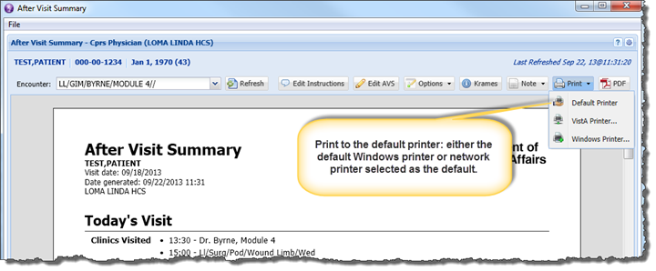
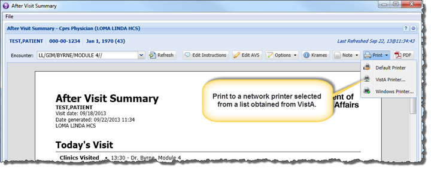
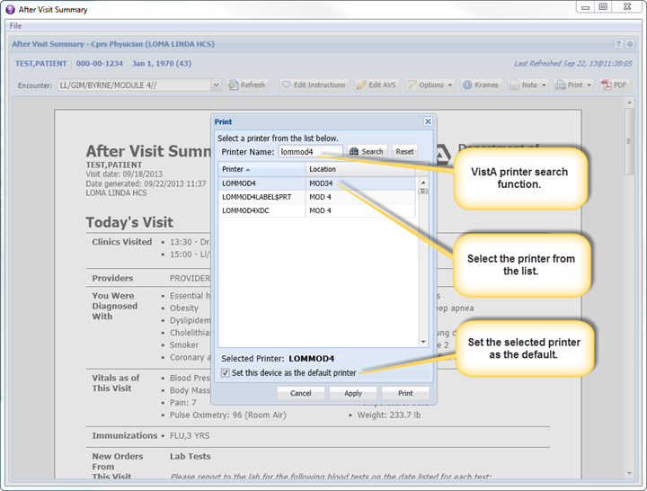
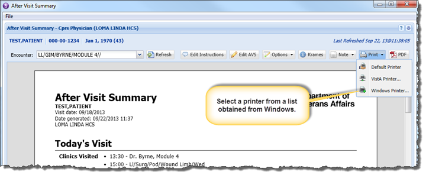
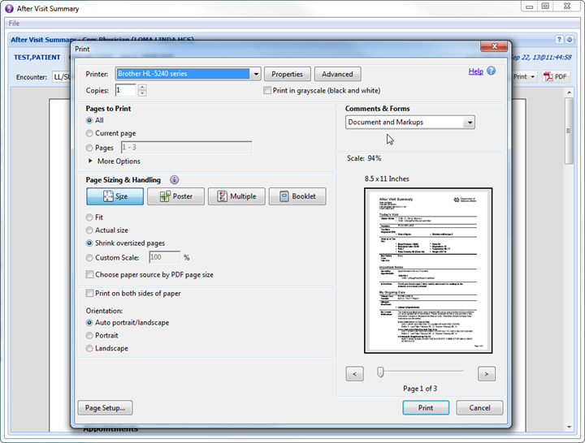

The AVS supports printing to a Windows printer that is connected directly to the user's workstation as well as to a network printer.
Clicking on the Default Printer option in the Print menu will either print directly to the default Windows printer, or to a network printer ("VistA Printer") that has been selected as the default printer in AVS.
Clicking on the VistA Printer option brings up a dialog that allows the user to select from and search a list of network printers that is obtained from VistA. The user may select a printer from this list as the default printer that AVS will automatically print to when the Default Printer menu option is clicked.
Clicking on the Windows Printer option invokes the standard Windows print dialog that allows the user to print to the default Windows printer or to select from a list of printers installed on the user's workstation.




